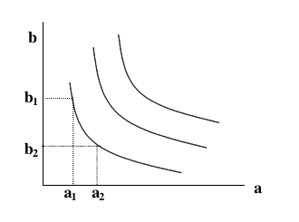
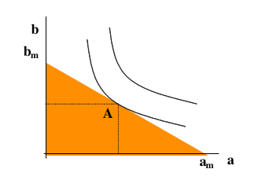
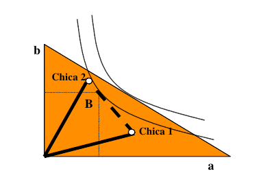
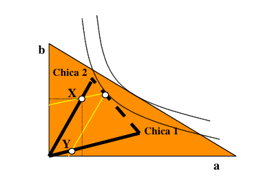
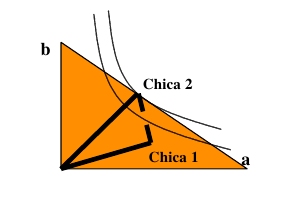
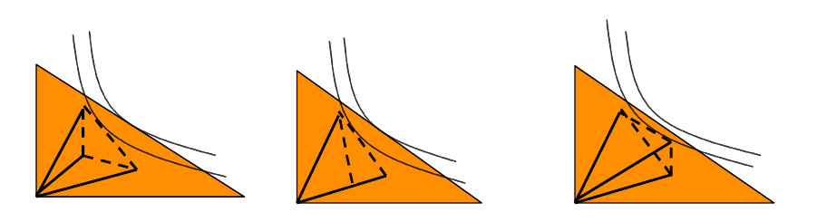

Son muchas las cosas que pueden gustarnos de otras personas y muy distintas las valoraciones que cada uno hacemos de lo que encontramos en los demás. Nuestro cerebro está acostumbrado a ponderarlas a gran velocidad. Basta con una rápida panorámica en una fiesta o una sala de conciertos para trazar una jerarquía provisional de preferencias (el mejor momento de cualquier encuentro social es para muchos precisamente aquel en el que se mira y evalúa a las personas presentes).
Si luego tenemos ocasión de obtener más datos al presentarnos, entablar conversación o escuchar las opiniones de los amigos, podremos modificar la jerarquía, pero no porque nuestras preferencias hayan cambiado (seguiremos prefiriendo simpatía a antipatía por ejemplo) sino porque nuestra información sobre las posibles víctimas de nuestra atención es más completa.
Parece pues que cada cual partiría de un “mapa” de valores diverso que contendría todo aquello que puede gustarle o disgustarle en los demás (características físicas, morales, sociales y de todo tipo) que en principio contrastaría con la información en cada momento disponible sobre los individuos que conoce.
Otro elemento es la estimación de la dificultad de conseguir la atención ajena: puede que nos sintamos tremendamente atraídos por la última gran estrella de la televisión, incluso que coincidamos con ella en un bar o una tienda y sin embargo optemos por dedicar nuestro tiempo a cortejar a otra persona cuyas virtudes sin duda nos atraen menos pero que de entrada consideramos más accesible. Es decir todos los datos anteriores los contrastaríamos también con nuestros propios recursos o al menos con la valoración que hacemos de ellos.
En 1966 el economista australiano y profesor en Columbia Kelvin John Lancaster [1] (en la fotografía) propuso un modelo de consumo que bien podría representar esta forma de hacer elecciones. Por supuesto no trataba de estos temas, sino que intentaba abrir un nuevo planteamiento desde el que reentender toda la teoría neoclásica del consumo.
| [1] | Lancaster, K. (1966). “A New Approach to Consumer Theory.” Journal of Political Economy 74 (April): 132-57. |
Kelvin John Lancaster / Public Domain
Su idea de fondo era que los bienes no eran deseados en si mismos, sino en la medida en que eran poseedores de una serie de características que eran las que los consumidores de verdad deseaban disfrutar. Una platónica y hermosa idea que convertía a los bienes de consumo en “cestas” de virtudes y defectos que los individuos valoraban. A su aportación se le llamó pues “Teoría de las Características” y aunque levantó muchas expectativas en la década posterior a su aparición ha tenido un peso errático en la bibliografía y los manuales de Microeconomía.
Para representar gráficamente esta teoría y empezar a jugar sin grandes dificultades analíticas con las relaciones que descubre, partiremos de un modelo en extremo sencillo: supondremos que nos presentan a dos personas (ambas de entrada atractivas para nosotros) y que nuestro sistema de valores es más bien pobre: tan sólo apreciamos dos características en los demás. Podríamos hacer que estas características fueran iguales por ejemplo a simpatía y belleza o a sex appeal y cultura. Les llamaremos a y b y que cada cual le ponga el significado que más se aproxime a su propio sistema de valores.
Lo importante es que el individuo ordena su propias preferencias dentro de ese sistema de valores, es decir que dada una combinación de a y b (que bien podría llamarse María por ejemplo) podría sentirse igualmente atraído por otra combinación (¿Ana?) que tuviera menos de a (¿cultura?) si compensa esa carencia con más b (¿sex appeal?).
Si representamos en ejes cartesianos esta idea veremos que cada punto del plano, es decir cada combinación concreta de a y b puede unirse a otros que producen exactamente la misma atracción sobre el sujeto. El resultado es lo que los economistas conocemos como curvas de indiferencia.
Note
Nuestro individuo sería indiferente entre las combinaciones 1 y 2 y en general entre todas las que forman una curva de indiferencia.
Naturalmente preferirá las combinaciones que están en las curvas más alejadas del origen puesto que le ofrecen más de ambas características.
Nuestro individuo sabe además por otras ocasiones (es un hombre de mundo) que si dedica todo el tiempo que le queda y sus encantos puede optar como máximo a una chica de sex appeal \(b_m\) (aunque su cultura sea cero) o a una chica horrorosa (cero sex appeal) pero de fascinante cultura \(am\). La línea que une ambos puntos determinaría todas las combinaciones de \(a\) y \(b\) a las que puede aspirar (el triángulo en color naranja), chicas más cultas o más guapas quedarían fuera de su alcance
Note
El ideal accesible de nuestro individuo sería por tanto una chica que tuviera una combinación \(A\), pues es la combinación accesible perteneciente a la curva de indiferencia más alta.
Una chica con atributos como los correspondientes a este punto sería su pareja ideal.
Como vemos en el gráfico, puede dedicar sus esfuerzos y aún ganar la atención de chicas más guapas (las que quedan en el segmento \(b_m A\)) o más cultas (las que quedan en el segmento \(A a_m\))... pero eso no las haría más atractivas para él ya que lo que perdieran de una cosa no se vería compensado por lo que ganan de la otra. Extraña la vida ¿verdad?
Pero volvamos a nuestra fiesta, hasta aquí llega lo que nos puede contar la teoría macroeconómica neoclásica, pero desgraciadamente para nuestro protagonista, en una fiesta no se encuentran todas las combinaciones representadas por los puntos de su triángulo de accesibilidad. Así que de hecho el no elige entre conjuntos de cualidades, sino que elige como repartir su tiempo y encantos entre dos chicas de carne y hueso que le han presentado. Cada una de las chicas tiene además una combinación concreta de virtudes que puede estar en cualquier lugar del triángulo (los amigos y sobre todo las amigas se cuidan mucho de presentarte chicas por debajo del lado superior del triángulo, a la que los economistas llamamos frontera de consumo).
Aquí es cuando tenemos que recurrir al modelo de Lancaster. Nuestro amigo estimaría cuan guapas y cultas son cada una de las dos y ¿cómo repartiría sus atenciones?
Para representarlo supondremos que ambas se encuentran dentro de su zona de posibilidades (dentro del triángulo), luego de entrada espera poder seducir a cualquiera de las dos... o ambas (la vida es muy larga y no sabes cuando te volverás a encontrar a la que ahora te parece menos atractiva... tal vez la próxima vez sea lo mejor de la fiesta). Así que de entrada no cierra puertas. Gráficamente lo podremos representar del siguiente modo:
Note
Representamos la combinación estimada de cada una de las chicas y trazamos el segmento que las une.
Esta sería la verdadera frontera eficiente (donde estaría más cerca de conseguir una combinación óptima para él de ambas cualidades)
Una vez más el punto de tangencia con la curva de indiferencia más alejada del origen marcaría el máximo nivel de satisfacción que el individuo podría alcanzar y por tanto la forma en la que repartiría sus esfuerzos sociales.
¿Pero cuanto dedica a cada una concretamente? Porque el punto \(B\) lo que marca es una relación entre cualidades, no entre esfuerzos dedicados a cada una. Bien, el amor tiene curiosas geometrías y esta es una de ellas: trazaremos (en amarillo) a partir del punto de equilibrio de cualidades \(B\) los vectores paralelos al que unen el origen con la combinación de cualidades de cada una de las chicas. El resultado son dos puntos de corte (\(X\) e \(Y\)) que señalan lo que nuestro héroe espera disfrutar de cada chica. La proporción de esfuerzo dedicada a cada chica vendría dada por las proporciones en las que el punto de tangencia divide al segmento grueso discontinuo (la frontera eficiente).
Note
Vemos que desea obtener mucha más atención de la chica dos que de la uno, aunque tampoco le olvida completamente.
Si redujéramos la medida del esfuerzo al tiempo dedicado podríamos calcular el esfuerzo exacto dedicado a la chica dos, por ejemplo, dividiendo las coordenadas de \(X\) entre el precio implícito de las cualidades \(b\) y \(a\) en ella.
¿Dijo precio? Dijo precio y dijo bien [2], cada rato que el individuo dedica a cualquiera de los dos tiene un coste (el tiempo) y una recompensa (la cantidad de a y b de la que disfruta por ello), dividiendo el tiempo dedicado entre las cantidades obtenidas obtenemos el precio implícito de cada cualidad en cada chica.
| [2] | Siempre me gustó el entremés de los conversadores de Cervantes, aunque también sea divertido la pieza dedicada a los arbitristas (miembros de la escuela de Teoría Económica española dominante en la época). |
Pero un momento: ¿Qué pasaría si una de las chicas es la chica ideal de la que hablábamos antes? Pues sencillamente que dedicaría todo su tiempo y esfuerzos a ella...
Note
El vector correspondiente a la chica ideal une el origen con el punto que antes llamamos A. Se daría una solución de esquina (llamada así por quedar en la esquina de la frontera eficiente). Nuestro héroe obnubilado no tendría ojos para nadie más...
Ahora volvamos a nuestra situación de partida (con dos chicas interesantes pero ninguna de las dos el ideal de nuestro protagonista). Cuando estamos a punto de encontrar el reparto ideal del tiempo... aparece una tercera chica amiga de las dos anteriores y se une al grupo... ¿Qué hacer? En primer lugar evaluar.
Note
Este dónde esté la valoración de cualidades de la tercera chica el resultado será el mismo: sólo tendrá sentido prestar atención a dos de ellas y la tercera (la recién llegada o alguna de las que ya estaba) perderá toda la atención.
Esto se debe a que en nuestros supuestos hemos partido de que nuestro protagonista sólo evalúa dos características. Sin embargo nos permite ver claramente algo importante: nunca el número de personas a las que preste atención será mayor que el de características que juzgue al conocer a una nueva persona.
Hay que recordar que como el caso de la chica ideal del gráfico anterior la inversa no es necesariamente cierta: que se preste atención a una única persona no quiere decir que se juzgue una única característica.
Esto tendría que darnos mucho que reflexionar ante la vieja pregunta: ¿puedo sentirme realmente atraído por más de una persona al mismo tiempo?.
La respuesta de la Teoría Económica es bastante clara: si eso te pasa es porque: